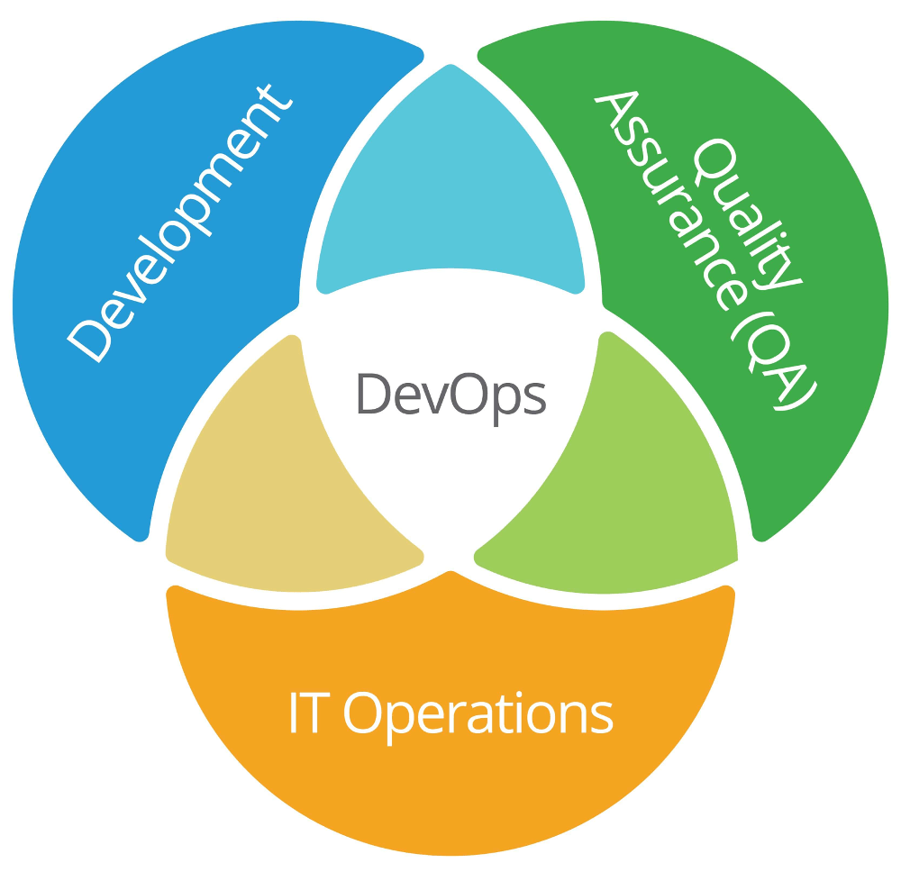

BeerUP – 2023. szeptember 13.
Gitlab CI, ArgoCD, GitOps és Kubernetes
szop... tapasztalatok
Gábor AUTH (gabor.auth@iotguru.cloud)
Agenda
1. Alapfogalmak
2. Kubernetes
3. GitOps
4. ArgoCD
5. GitLab CI
6. Összegzés, Q&A
1. Alapfogalmak

1.1. DevOps
"DevOps is the combination of cultural philosophies, practices, and tools that increases an organization’s ability to deliver applications and services at high velocity: evolving and improving products at a faster pace than organizations using traditional software development and infrastructure management processes."
1.1. DevOps
- olyan fejlesztő, aki tud üzemeltetni is (bullshit)
- olyan üzemeltető, aki tud fejleszteni is (bullshit)
- a fejlesztői infrastruktúrát üzemelteti (platform engineer)
- a felhős infrastruktúrát üzemelteti (cloud engineer)
- az alkalmazásüzemeltő (application operations engineer)
- a DevOps egy olyan filozófia... (ez!)
1.1. DevOps
Azt szoktam mondani, hogy a "nálunk a Béla a devopszos" kijelentés pont annyira hülyén kell hangozzon, mint az, hogy "nálunk a Józsi az agilis fejlesztő"...
...de úgy tűnik, hogy a "nálunk a Béla a devopszos" kijelentés velünk marad.
1.1. DevOps CI/CD loop

2. Kubernetes
Google hobby-projekt
Nyílt forrású 2014 óta
2020 óta kvázi szabvány
A neve “kormányos” görögül
Konténer-menedzser
Deklaratív konfiguráció
2.1. Mi is ez?
Service discovery & orchestration
Automated rollout and rollback
Automatic resource packing
Configuration management
Health checks & rules
Load balancing
Self-healing
2.1. Mi is ez?

2.2. Workshop
3. GitOps
"GitOps uses Git repositories as a single source of truth to deliver infrastructure as code."
3.1. Mi is ez?
A standard workflow
Increased security
Improved reliability with visibility
Consistency across all environment
3.2. Workshop
4. ArgoCD
"Argo CD is a declarative, GitOps continuous delivery tool for Kubernetes."
4.1. Mi is ez?
Create clusters with a known state.
Recover or recreate clusters.
Apply or revert configuration changes to multiple clusters.
Templated configuration with different environments.
4.2. Workshop
5. GitLab CI
"GitLab is an open source code repository and collaborative software development platform for large DevOps and DevSecOps projects."
5.1. Mi is ez?
It aims to provide build automation, test automation, pipeline config management, artifact storage, and pipeline security.
A Runner is an application that runs jobs in a pipeline.
It's simple, everything is in the .gitlab-ci.yaml
...or templates, or includes, or... nowadays, it's complicated.
5.1. Mi is ez?
Scripts you want to run.
Configuration files
Templates you want to include.
Dependencies and caches.
Sequence and parallel runs.
Deploy your application.
Automate, trigger or run manually.